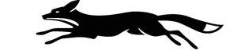

Trade Mark Journal No.2025/022 30 May 2025
UK00004200663 8 May 2025 (14,16,18,25,28,41)
Mark 1
Mark 2
Mark 3
Mark 4

- Class 14
- Jewellery, watches, horological and chronometric instruments, cufflinks, tie-pins, lapel badges, precious stones, tankards of precious metal, medals of precious metal, badges of precious metals, keyrings and key fobs, trophies and cups of precious metal.
- Class 16
- Paper, card, cardboard and goods made from these articles/cardboard articles; Stationery; Printed matter or publications; Books; Promotional material; Tickets, flyers, programmes; Almanacs, photographs, periodical publications, calendars.
- Class 18
- Bags; sports bags; rucksacks; backpacks; luggage; suitcases; travelling bags; holdalls; duffle bags; wash bags and toiletry bags sold empty; umbrellas, parasols and walking sticks.
- Class 25
- Clothing, footwear and headwear.
- Class 28
- Toys, games and playthings; Sporting articles; Equipment and apparatus for use in the game of cricket including cricket balls, cricket pads, cricket boxes, cricket bats, cricket nets, cricket wickets, cricket stumps, cricket gloves, protective padded articles for use in playing the game of cricket.
- Class 41
- Education; Providing of training; Entertainment; Sporting and cultural activities; Provision of training facilities; Sports training; Sports tuition; Sports coaching; Sport camp services; Sports refereeing; Education services relating to sports and leisure; Arranging and conducting conferences, seminars exhibitions and competitions; Sports entertainment services; Provision of entertainment facilities; Organisation and arrangement of sports, competitions and events, competitions and entertainment events; Live music concerts; Musical entertainment; Providing facilities for sporting events; Booking of sports personalities for events (services of a promoter); Provision of stadium facilities and services for sports; Rental of sports and stadium facilities; Hire of equipment for sports; Booking of sports facilities; Publication of calendars of events; Sports club services; Sports information services; information, advisory, consultancy and booking services relating to the above.
Leicestershire County Cricket Club Limited
Representative: Freeths LLP